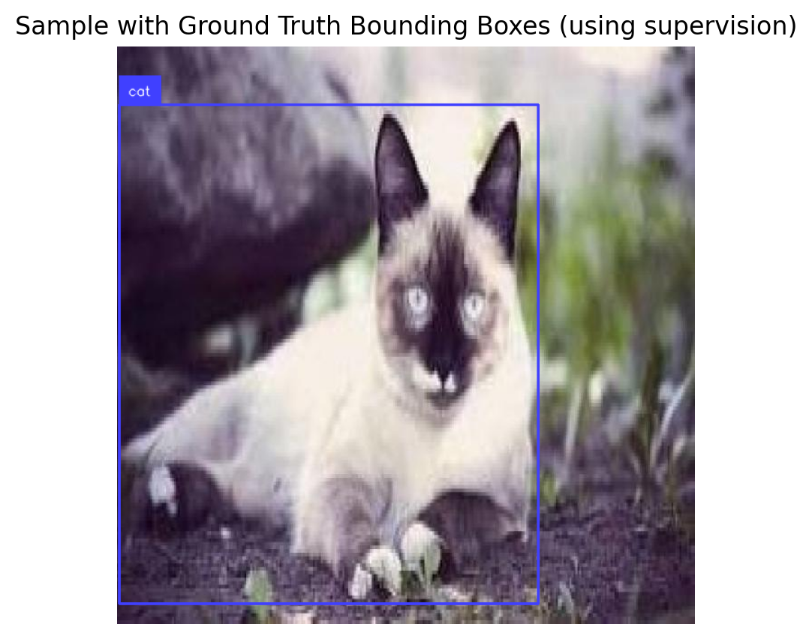
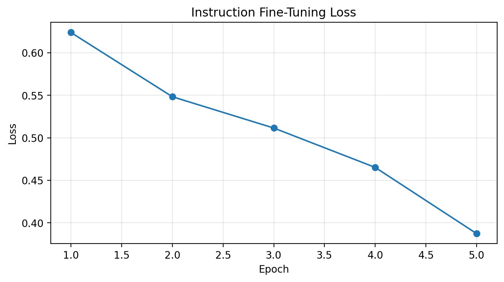
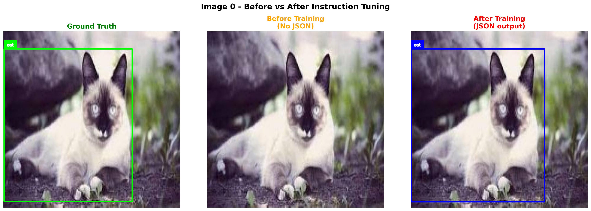
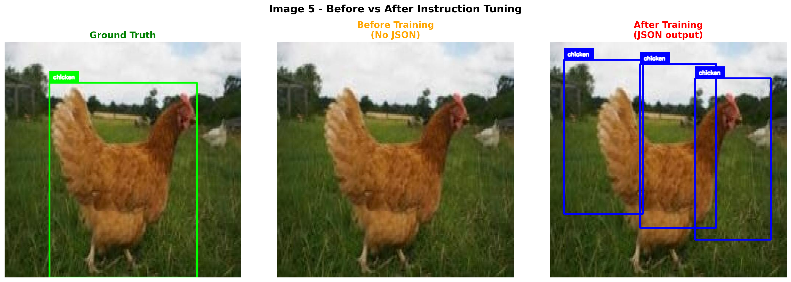
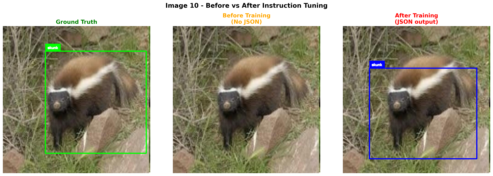
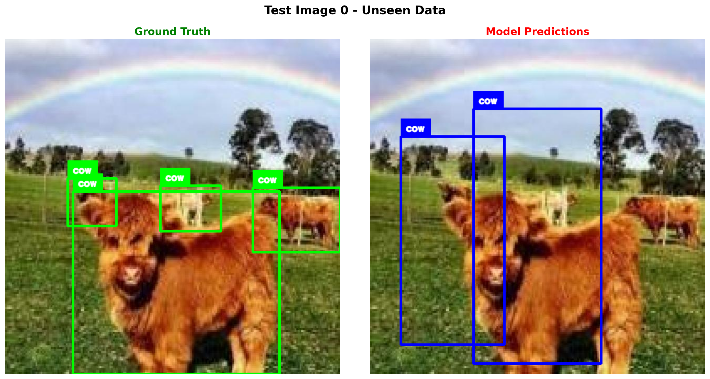
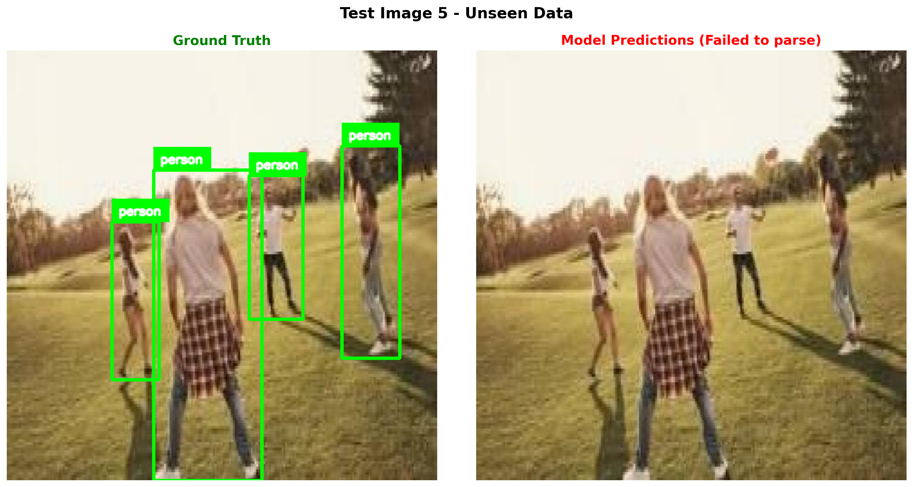
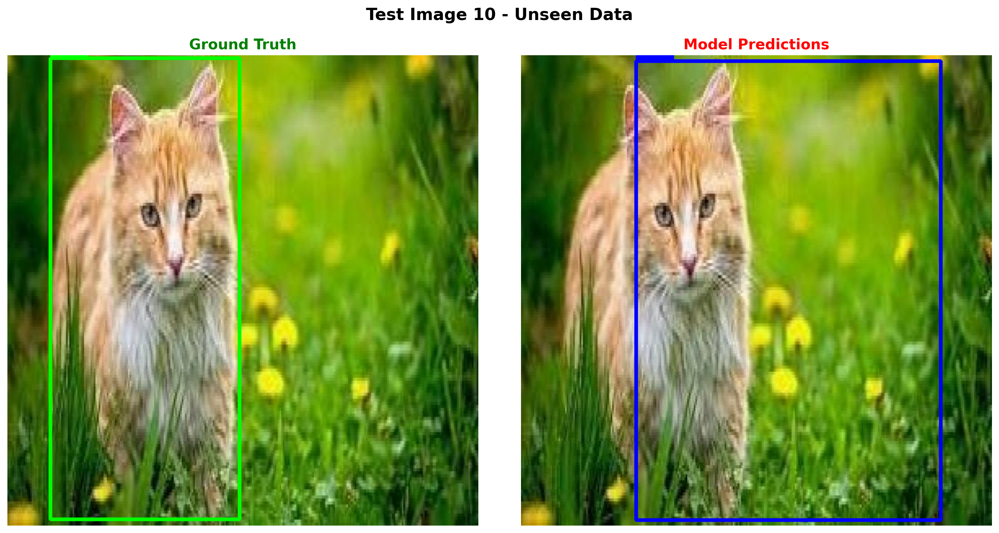

!uv pip install -q transformers datasets torch torchvision pillow accelerate einops timm supervisionIntroduction
In the previous notebook, we built a minimal Vision-Language Model (VLM) from scratch and trained it on image captioning. The model learned to describe images in natural language.
Now, let’s take it a step further: instruction fine-tuning for object detection. Instead of just describing an image, we’ll teach the model to:
- Understand questions like “What objects are in this image?”
- Output structured JSON with bounding box coordinates
- Identify object categories
This is similar to how models like Kosmos-2 and Florence-2 handle visual grounding tasks.
Output Format
We’ll train the model to output JSON like:
{"objects": [{"label": "cat", "bbox": [x, y, w, h]}, {"label": "dog", "bbox": [x, y, w, h]}]}Where bbox contains normalized coordinates (0-1 range).
Setup
import torch
import torch.nn as nn
import torch.nn.functional as F
from torch.utils.data import DataLoader, Dataset
from transformers import (
AutoModelForCausalLM,
AutoTokenizer,
ViTModel,
ViTImageProcessor,
)
from datasets import load_dataset
from PIL import Image
import numpy as np
import requests
from io import BytesIO
import matplotlib.pyplot as plt
from tqdm.auto import tqdm
import json
import textwrap
import os
import warnings
warnings.filterwarnings('ignore')
# Import supervision for visualization
import supervision as sv
%config InlineBackend.figure_format = 'retina'
device = torch.device("cuda" if torch.cuda.is_available() else "cpu")
print(f"Using device: {device}")/home/nipun.batra/.uv/nb-base/lib/python3.12/site-packages/tqdm/auto.py:21: TqdmWarning: IProgress not found. Please update jupyter and ipywidgets. See https://ipywidgets.readthedocs.io/en/stable/user_install.html
from .autonotebook import tqdm as notebook_tqdmUsing device: cudaPart 1: Load the Pretrained VLM
We’ll load our VLM from the previous notebook. If you haven’t run that notebook yet, we’ll recreate the model from scratch.
# First, let's define the model architecture (same as previous notebook)
class VisionProjector(nn.Module):
"""Projects vision features into the language model's embedding space."""
def __init__(self, vision_dim: int, language_dim: int):
super().__init__()
self.projection = nn.Sequential(
nn.Linear(vision_dim, language_dim),
nn.GELU(),
nn.LayerNorm(language_dim),
nn.Linear(language_dim, language_dim),
)
def forward(self, vision_features: torch.Tensor) -> torch.Tensor:
return self.projection(vision_features)
class MiniVLM(nn.Module):
"""A minimal Vision-Language Model."""
def __init__(
self,
vision_encoder: ViTModel,
language_model: AutoModelForCausalLM,
projector: VisionProjector,
tokenizer: AutoTokenizer,
):
super().__init__()
self.vision_encoder = vision_encoder
self.language_model = language_model
self.projector = projector
self.tokenizer = tokenizer
for param in self.vision_encoder.parameters():
param.requires_grad = False
def encode_image(self, pixel_values: torch.Tensor) -> torch.Tensor:
with torch.no_grad():
vision_outputs = self.vision_encoder(pixel_values=pixel_values)
image_features = vision_outputs.last_hidden_state
projected = self.projector(image_features)
return projected
def forward(
self,
pixel_values: torch.Tensor,
input_ids: torch.Tensor,
attention_mask: torch.Tensor,
labels: torch.Tensor = None,
):
batch_size = pixel_values.shape[0]
image_embeds = self.encode_image(pixel_values)
num_image_tokens = image_embeds.shape[1]
text_embeds = self.language_model.get_input_embeddings()(input_ids)
combined_embeds = torch.cat([image_embeds, text_embeds], dim=1)
image_attention = torch.ones(
(batch_size, num_image_tokens),
dtype=attention_mask.dtype,
device=attention_mask.device
)
combined_attention = torch.cat([image_attention, attention_mask], dim=1)
if labels is not None:
image_labels = torch.full(
(batch_size, num_image_tokens),
fill_value=-100,
dtype=labels.dtype,
device=labels.device
)
combined_labels = torch.cat([image_labels, labels], dim=1)
else:
combined_labels = None
outputs = self.language_model(
inputs_embeds=combined_embeds,
attention_mask=combined_attention,
labels=combined_labels,
return_dict=True,
)
return outputs
@torch.no_grad()
def generate(
self,
pixel_values: torch.Tensor,
prompt: str = "What objects are in this image?",
max_new_tokens: int = 150,
temperature: float = 0.3,
do_sample: bool = True,
) -> str:
"""Generate a response for an image given a prompt."""
self.eval()
image_embeds = self.encode_image(pixel_values)
prompt_ids = self.tokenizer.encode(prompt, return_tensors="pt").to(pixel_values.device)
generated_ids = prompt_ids.clone()
for _ in range(max_new_tokens):
current_embeds = self.language_model.get_input_embeddings()(generated_ids)
full_embeds = torch.cat([image_embeds, current_embeds], dim=1)
outputs = self.language_model(inputs_embeds=full_embeds)
next_token_logits = outputs.logits[:, -1, :]
if do_sample:
probs = F.softmax(next_token_logits / temperature, dim=-1)
next_token = torch.multinomial(probs, num_samples=1)
else:
next_token = next_token_logits.argmax(dim=-1, keepdim=True)
generated_ids = torch.cat([generated_ids, next_token], dim=1)
if next_token.item() == self.tokenizer.eos_token_id:
break
return self.tokenizer.decode(generated_ids[0], skip_special_tokens=True)import os
# Model names - using larger models for better performance
vision_model_name = "google/vit-large-patch16-224"
lm_model_name = "HuggingFaceTB/SmolLM-360M"
pretrained_dir = "mini-vlm-flickr8k"
# Load base models
vision_encoder = ViTModel.from_pretrained(vision_model_name)
language_model = AutoModelForCausalLM.from_pretrained(lm_model_name)
tokenizer = AutoTokenizer.from_pretrained(lm_model_name)
image_processor = ViTImageProcessor.from_pretrained(vision_model_name)
if tokenizer.pad_token is None:
tokenizer.pad_token = tokenizer.eos_token
# Create projector
vision_dim = vision_encoder.config.hidden_size # 1024 for ViT-Large
language_dim = language_model.config.hidden_size # 960 for SmolLM-360M
projector = VisionProjector(vision_dim, language_dim)
# Try to load pretrained weights if available
if os.path.exists(f"{pretrained_dir}/mini_vlm_full.pt"):
print(f"Loading pretrained weights from {pretrained_dir}/")
checkpoint = torch.load(f"{pretrained_dir}/mini_vlm_full.pt", map_location='cpu')
# Only load if dimensions match
try:
projector.load_state_dict(checkpoint['projector_state_dict'])
language_model.load_state_dict(checkpoint['language_model_state_dict'])
print("Loaded pretrained VLM weights!")
except Exception as e:
print(f"Could not load pretrained weights (dimension mismatch): {e}")
print("Starting with fresh weights for new model sizes.")
else:
print("No pretrained weights found. Starting from scratch.")
print("(Run the previous notebook first for better results)")
# Create VLM
vlm = MiniVLM(vision_encoder, language_model, projector, tokenizer)
vlm = vlm.to(device)
print(f"\nModel loaded on {device}")
print(f"Vision encoder: {vision_model_name} (hidden_size={vision_dim})")
print(f"Language model: {lm_model_name} (hidden_size={language_dim})")
print(f"Trainable parameters: {sum(p.numel() for p in vlm.parameters() if p.requires_grad):,}")Some weights of ViTModel were not initialized from the model checkpoint at google/vit-large-patch16-224 and are newly initialized: ['pooler.dense.bias', 'pooler.dense.weight']
You should probably TRAIN this model on a down-stream task to be able to use it for predictions and inference.Loading pretrained weights from mini-vlm-flickr8k/
Loaded pretrained VLM weights!
Model loaded on cuda
Vision encoder: google/vit-large-patch16-224 (hidden_size=1024)
Language model: HuggingFaceTB/SmolLM-360M (hidden_size=960)
Trainable parameters: 363,729,600Part 2: Load Object Detection Dataset
We’ll use a small animal detection dataset with bounding box annotations. The dataset has 700 training images with categories like cat, dog, horse, cow, etc.
# Load the animals detection dataset - use ALL data for better training
od_dataset = load_dataset('Francesco/animals-ij5d2', split='train')
# Also load validation for more data
val_data = load_dataset('Francesco/animals-ij5d2', split='validation')
# Combine train + validation for more training data
from datasets import concatenate_datasets
od_dataset = concatenate_datasets([od_dataset, val_data])
print(f"Dataset size: {len(od_dataset)} (train + validation combined)")
print(f"Features: {od_dataset.features}")
# Get category names
category_names = od_dataset.features['objects']['category'].feature.names
print(f"\nCategories: {category_names}")Dataset size: 800 (train + validation combined)
Features: {'image_id': Value('int64'), 'image': Image(mode=None, decode=True), 'width': Value('int32'), 'height': Value('int32'), 'objects': {'id': List(Value('int64')), 'area': List(Value('int64')), 'bbox': List(List(Value('float32'), length=4)), 'category': List(ClassLabel(names=['animals', 'cat', 'chicken', 'cow', 'dog', 'fox', 'goat', 'horse', 'person', 'racoon', 'skunk']))}}
Categories: ['animals', 'cat', 'chicken', 'cow', 'dog', 'fox', 'goat', 'horse', 'person', 'racoon', 'skunk']# Look at a sample and visualize with supervision
sample = od_dataset[0]
print(f"Image size: {sample['width']}x{sample['height']}")
print(f"Objects: {sample['objects']}")
# Convert to supervision Detections
def create_sv_detections(objects, category_names):
"""Convert dataset objects to supervision Detections."""
bboxes = []
class_ids = []
for bbox, cat_id in zip(objects['bbox'], objects['category']):
x, y, w, h = bbox
# supervision uses xyxy format
bboxes.append([x, y, x + w, y + h])
class_ids.append(cat_id)
if len(bboxes) == 0:
return sv.Detections.empty()
return sv.Detections(
xyxy=np.array(bboxes),
class_id=np.array(class_ids),
)
# Create annotators
box_annotator = sv.BoxAnnotator(thickness=2)
label_annotator = sv.LabelAnnotator(text_scale=0.5, text_thickness=1)
# Annotate image
image_np = np.array(sample['image'])
detections = create_sv_detections(sample['objects'], category_names)
labels = [category_names[i] for i in detections.class_id]
annotated = box_annotator.annotate(image_np.copy(), detections)
annotated = label_annotator.annotate(annotated, detections, labels=labels)
plt.figure(figsize=(5, 5))
plt.imshow(annotated)
plt.title("Sample with Ground Truth Bounding Boxes (using supervision)", fontsize=12)
plt.axis('off')
plt.show()Image size: 640x640
Objects: {'id': [922], 'area': [256868], 'bbox': [[2.0, 64.0, 464.5, 553.0]], 'category': [1]}
Part 3: Create Instruction Dataset
We need to convert the object detection annotations into instruction-response pairs:
Input (Instruction): "What objects are in this image? Output as JSON."
Output (Response): {"objects": [{"label": "cat", "bbox": [0.1, 0.2, 0.3, 0.4]}]}
We normalize bounding boxes to 0-1 range for consistency.
def create_od_json(objects, width, height, category_names):
"""Convert bounding box annotations to JSON format."""
result = {"objects": []}
for bbox, cat_id in zip(objects['bbox'], objects['category']):
x, y, w, h = bbox
# Normalize to 0-1 range
norm_bbox = [
round(x / width, 3),
round(y / height, 3),
round(w / width, 3),
round(h / height, 3)
]
result["objects"].append({
"label": category_names[cat_id],
"bbox": norm_bbox
})
return json.dumps(result)
# Test on a sample
sample = od_dataset[0]
json_output = create_od_json(sample['objects'], sample['width'], sample['height'], category_names)
print("Example JSON output:")
print(json.dumps(json.loads(json_output), indent=2))Example JSON output:
{
"objects": [
{
"label": "cat",
"bbox": [
0.003,
0.1,
0.726,
0.864
]
}
]
}import random
# Different instruction prompts for variety
INSTRUCTION_PROMPTS = [
"What objects are in this image? Output as JSON.",
"Detect all objects in this image and return JSON with bounding boxes.",
"List the objects with their locations in JSON format.",
"Find all objects and output their bounding boxes as JSON.",
]
class ODInstructionDataset(Dataset):
"""Dataset for object detection instruction tuning."""
def __init__(self, hf_dataset, image_processor, tokenizer, category_names, max_length=256):
self.dataset = hf_dataset
self.image_processor = image_processor
self.tokenizer = tokenizer
self.category_names = category_names
self.max_length = max_length
def __len__(self):
return len(self.dataset)
def __getitem__(self, idx):
item = self.dataset[idx]
# Process image
image = item['image'].convert('RGB')
pixel_values = self.image_processor(image, return_tensors="pt").pixel_values.squeeze(0)
# Create instruction-response pair
instruction = random.choice(INSTRUCTION_PROMPTS)
response = create_od_json(item['objects'], item['width'], item['height'], self.category_names)
# Format: "<instruction> <response><eos>"
# IMPORTANT: Adding EOS token teaches the model to STOP after JSON!
full_text = f"{instruction} {response}{self.tokenizer.eos_token}"
# Tokenize
encoding = self.tokenizer(
full_text,
max_length=self.max_length,
padding='max_length',
truncation=True,
return_tensors='pt'
)
input_ids = encoding['input_ids'].squeeze(0)
attention_mask = encoding['attention_mask'].squeeze(0)
# Create labels - mask the instruction part (only train on response + EOS)
instruction_tokens = self.tokenizer.encode(instruction, add_special_tokens=False)
instruction_len = len(instruction_tokens)
labels = input_ids.clone()
labels[:instruction_len] = -100 # Don't compute loss on instruction
labels[attention_mask == 0] = -100 # Don't compute loss on padding
return {
'pixel_values': pixel_values,
'input_ids': input_ids,
'attention_mask': attention_mask,
'labels': labels,
}
# Create dataset and dataloader
train_dataset = ODInstructionDataset(od_dataset, image_processor, tokenizer, category_names)
train_loader = DataLoader(
train_dataset,
batch_size=4,
shuffle=True,
num_workers=0,
)
print(f"Number of training samples: {len(train_dataset)}")
print(f"Number of batches: {len(train_loader)}")
# Verify EOS token is in training data
sample = train_dataset[0]
decoded = tokenizer.decode(sample['input_ids'])
print(f"\nSample with EOS token:")
print(decoded[:200] + "...")Number of training samples: 800
Number of batches: 200
Sample with EOS token:
Detect all objects in this image and return JSON with bounding boxes. {"objects": [{"label": "cat", "bbox": [0.003, 0.1, 0.726, 0.864]}]}<|endoftext|><|endoftext|><|endoftext|><|endoftext|><|endoftext...# Verify a batch
batch = next(iter(train_loader))
print(f"Batch pixel_values shape: {batch['pixel_values'].shape}")
print(f"Batch input_ids shape: {batch['input_ids'].shape}")
# Decode first sample to see the format
print(f"\nSample text (first item):")
print(tokenizer.decode(batch['input_ids'][0], skip_special_tokens=True)[:300])Batch pixel_values shape: torch.Size([4, 3, 224, 224])
Batch input_ids shape: torch.Size([4, 256])
Sample text (first item):
What objects are in this image? Output as JSON. {"objects": [{"label": "cat", "bbox": [0.0, 0.0, 0.624, 1.0]}]}Part 4: Test Before Training
Let’s see what the model outputs before instruction tuning. It should produce captions (from the previous training) but not structured JSON.
def generate_od_response(model, image, image_processor, device, prompt="What objects are in this image? Output as JSON."):
"""Generate object detection response for an image."""
model.eval()
if not isinstance(image, Image.Image):
image = Image.fromarray(image)
image = image.convert('RGB')
pixel_values = image_processor(image, return_tensors="pt").pixel_values.to(device)
# Use greedy decoding (do_sample=False) for structured JSON output
# This produces more stable, consistent output
response = model.generate(
pixel_values,
prompt=prompt,
max_new_tokens=150,
temperature=1.0, # Ignored when do_sample=False
do_sample=False, # Greedy decoding for JSON
)
return response # Return raw response, let parse_od_response handle cleanup# Test on a few samples BEFORE training and STORE responses
test_indices = [0, 5, 10]
test_samples_data = [] # Store for later comparison
print("=" * 70)
print("BEFORE INSTRUCTION TUNING - Model outputs (should be captions, not JSON)")
print("=" * 70)
before_responses = []
for idx in test_indices:
sample = od_dataset[idx]
response = generate_od_response(vlm, sample['image'], image_processor, device)
before_responses.append(response)
test_samples_data.append({
'idx': idx,
'image': sample['image'],
'objects': sample['objects'],
'width': sample['width'],
'height': sample['height'],
})
gt_json = create_od_json(sample['objects'], sample['width'], sample['height'], category_names)
print(f"\nImage {idx}:")
print(f" Model output: {response[:100]}...")
print(f" Expected JSON: {gt_json[:80]}...")======================================================================
BEFORE INSTRUCTION TUNING - Model outputs (should be captions, not JSON)
======================================================================
Image 0:
Model output: What objects are in this image? Output as JSON.A white and brown cat is climbing over a large branch...
Expected JSON: {"objects": [{"label": "cat", "bbox": [0.003, 0.1, 0.726, 0.864]}]}...
Image 5:
Model output: What objects are in this image? Output as JSON.A brown and white dog is eating a large brown and whi...
Expected JSON: {"objects": [{"label": "chicken", "bbox": [0.189, 0.173, 0.623, 0.827]}]}...
Image 10:
Model output: What objects are in this image? Output as JSON.A man is climbing up a rock wall . . . . . . . . . . ...
Expected JSON: {"objects": [{"label": "skunk", "bbox": [0.287, 0.17, 0.684, 0.695]}]}...Part 5: Instruction Fine-Tuning
Now let’s fine-tune the model to output structured JSON for object detection.
def train_vlm_od(model, train_loader, num_epochs=5, lr=1e-4, checkpoint_path="od_checkpoint.pt"):
"""Train the VLM for object detection with checkpoint support for resumable training."""
trainable_params = [p for p in model.parameters() if p.requires_grad]
optimizer = torch.optim.AdamW(trainable_params, lr=lr)
# Try to load checkpoint for resumable training
start_epoch = 0
losses = []
if os.path.exists(checkpoint_path):
print(f"Found checkpoint: {checkpoint_path}")
try:
checkpoint = torch.load(checkpoint_path, map_location='cpu')
start_epoch = checkpoint.get('epoch', 0)
losses = checkpoint.get('losses', [])
model.projector.load_state_dict(checkpoint['projector_state_dict'])
model.language_model.load_state_dict(checkpoint['language_model_state_dict'])
optimizer.load_state_dict(checkpoint['optimizer_state_dict'])
# Move optimizer state to device
for state in optimizer.state.values():
for k, v in state.items():
if isinstance(v, torch.Tensor):
state[k] = v.to(device)
print(f"Resumed from epoch {start_epoch}")
except Exception as e:
print(f"Could not load checkpoint: {e}")
model.train()
model.vision_encoder.eval()
try:
for epoch in range(start_epoch, num_epochs):
epoch_loss = 0
progress_bar = tqdm(train_loader, desc=f"Epoch {epoch+1}/{num_epochs}")
for batch in progress_bar:
pixel_values = batch['pixel_values'].to(device)
input_ids = batch['input_ids'].to(device)
attention_mask = batch['attention_mask'].to(device)
labels = batch['labels'].to(device)
outputs = model(
pixel_values=pixel_values,
input_ids=input_ids,
attention_mask=attention_mask,
labels=labels,
)
loss = outputs.loss
optimizer.zero_grad()
loss.backward()
torch.nn.utils.clip_grad_norm_(trainable_params, max_norm=1.0)
optimizer.step()
epoch_loss += loss.item()
progress_bar.set_postfix({'loss': f"{loss.item():.4f}"})
avg_loss = epoch_loss / len(train_loader)
losses.append(avg_loss)
print(f"Epoch {epoch+1} - Average Loss: {avg_loss:.4f}")
# Save checkpoint after each epoch
torch.save({
'epoch': epoch + 1,
'losses': losses,
'projector_state_dict': model.projector.state_dict(),
'language_model_state_dict': model.language_model.state_dict(),
'optimizer_state_dict': optimizer.state_dict(),
}, checkpoint_path)
print(f"Checkpoint saved to {checkpoint_path}")
except KeyboardInterrupt:
print("\n" + "="*70)
print("Training interrupted!")
print(f"Completed {len(losses)} epochs")
# Save checkpoint on interrupt
torch.save({
'epoch': len(losses),
'losses': losses,
'projector_state_dict': model.projector.state_dict(),
'language_model_state_dict': model.language_model.state_dict(),
'optimizer_state_dict': optimizer.state_dict(),
}, checkpoint_path)
print(f"Checkpoint saved to {checkpoint_path}")
print("Run training again to resume from this checkpoint.")
print("="*70)
return losses# Train for more epochs with combined dataset
# Training is preemptible - interrupt with Ctrl+C and re-run to resume
losses = train_vlm_od(vlm, train_loader, num_epochs=10, lr=1e-4, checkpoint_path="od_checkpoint.pt")Epoch 1/10: 100%|██████████| 200/200 [02:11<00:00, 1.52it/s, loss=0.5430]Epoch 1 - Average Loss: 0.6239
Checkpoint saved to od_checkpoint.ptEpoch 2/10: 100%|██████████| 200/200 [02:00<00:00, 1.67it/s, loss=0.4743]Epoch 2 - Average Loss: 0.5484
Checkpoint saved to od_checkpoint.ptEpoch 3/10: 100%|██████████| 200/200 [01:40<00:00, 1.99it/s, loss=0.5163]Epoch 3 - Average Loss: 0.5115
Checkpoint saved to od_checkpoint.ptEpoch 4/10: 100%|██████████| 200/200 [01:29<00:00, 2.23it/s, loss=0.4319]Epoch 4 - Average Loss: 0.4652
Checkpoint saved to od_checkpoint.ptEpoch 5/10: 100%|██████████| 200/200 [01:28<00:00, 2.25it/s, loss=0.2394]Epoch 5 - Average Loss: 0.3873
Checkpoint saved to od_checkpoint.ptEpoch 6/10: 2%|▏ | 4/200 [00:01<01:34, 2.07it/s, loss=0.3078]
======================================================================
Training interrupted!
Completed 5 epochs
Checkpoint saved to od_checkpoint.pt
Run training again to resume from this checkpoint.
======================================================================# Plot training loss
plt.figure(figsize=(8, 4))
plt.plot(range(1, len(losses)+1), losses, marker='o')
plt.xlabel('Epoch')
plt.ylabel('Loss')
plt.title('Instruction Fine-Tuning Loss')
plt.grid(True, alpha=0.3)
plt.show()
Part 6: Test After Training
Let’s compare the outputs before and after instruction tuning!
# Test on the same samples AFTER training - compare with BEFORE
print("=" * 70)
print("COMPARISON: BEFORE vs AFTER INSTRUCTION TUNING")
print("=" * 70)
after_responses = []
for i, (sample_data, before_resp) in enumerate(zip(test_samples_data, before_responses)):
response = generate_od_response(vlm, sample_data['image'], image_processor, device)
after_responses.append(response)
gt_json = create_od_json(sample_data['objects'], sample_data['width'], sample_data['height'], category_names)
print(f"\n{'='*70}")
print(f"Image {sample_data['idx']}:")
print(f"{'='*70}")
print(f"BEFORE (caption model): {before_resp[:120]}...")
print(f"AFTER (instruction-tuned): {response[:120]}...")
print(f"GROUND TRUTH: {gt_json[:120]}...")======================================================================
COMPARISON: BEFORE vs AFTER INSTRUCTION TUNING
======================================================================
======================================================================
Image 0:
======================================================================
BEFORE (caption model): What objects are in this image? Output as JSON.A white and brown cat is climbing over a large branch .A brown and white ...
AFTER (instruction-tuned): What objects are in this image? Output as JSON. {"objects": [{"label": "cat", "bbox": [0.0, 0.1, 0.755, 0.866]}]}...
GROUND TRUTH: {"objects": [{"label": "cat", "bbox": [0.003, 0.1, 0.726, 0.864]}]}...
======================================================================
Image 5:
======================================================================
BEFORE (caption model): What objects are in this image? Output as JSON.A brown and white dog is eating a large brown and white duck .A brown and...
AFTER (instruction-tuned): What objects are in this image? Output as JSON. {"objects": [{"label": "chicken", "bbox": [0.189, 0.18, 0.748, 0.816]}]}...
GROUND TRUTH: {"objects": [{"label": "chicken", "bbox": [0.189, 0.173, 0.623, 0.827]}]}...
======================================================================
Image 10:
======================================================================
BEFORE (caption model): What objects are in this image? Output as JSON.A man is climbing up a rock wall . . . . . . . . . . . . . . . . . . . . ...
AFTER (instruction-tuned): What objects are in this image? Output as JSON. {"objects": [{"label": "skunk", "bbox": [0.18, 0.286, 0.728, 0.617]}]}...
GROUND TRUTH: {"objects": [{"label": "skunk", "bbox": [0.287, 0.17, 0.684, 0.695]}]}...def parse_od_response(response):
"""Try to parse JSON from model response. Handles malformed JSON gracefully."""
try:
# Find JSON start
start = response.find('{"objects"')
if start == -1:
start = response.find('{')
if start == -1:
return None
# Try to find proper JSON end by matching braces
brace_count = 0
bracket_count = 0
end = start
for i, char in enumerate(response[start:], start):
if char == '{':
brace_count += 1
elif char == '}':
brace_count -= 1
elif char == '[':
bracket_count += 1
elif char == ']':
bracket_count -= 1
# Valid JSON object closes when all braces match
if brace_count == 0 and i > start:
end = i + 1
break
if end > start:
json_str = response[start:end]
try:
return json.loads(json_str)
except json.JSONDecodeError:
pass
# Fallback: try to find ]} pattern and construct valid JSON
idx = response.find(']}', start)
if idx != -1:
json_str = response[start:idx+2]
try:
return json.loads(json_str)
except json.JSONDecodeError:
# Try adding missing closing brace
try:
return json.loads(json_str + '}')
except:
pass
# Last resort: find objects array and reconstruct
obj_start = response.find('[', start)
obj_end = response.find(']', obj_start)
if obj_start != -1 and obj_end != -1:
try:
array_str = response[obj_start:obj_end+1]
return {"objects": json.loads(array_str)}
except:
pass
except Exception as e:
pass
return None
# Test the parser with various malformed outputs
test_cases = [
'What objects are in this image? Output as JSON. {"objects": [{"label": "cat", "bbox": [0.022, 0.006, 0.773, 0.994]}]}',
'What objects are in this image? Output as JSON. {"objects": [{"label": "cat", "bbox": [0.022, 0.006, 0.773, 0.994]}]}]}]}',
'What objects are in this image? Output as JSON. {"objects": [{"label": "cat", "bbox": [0.0, 0.0, 0.727, 0.994]}',
]
print("Testing parser on various outputs:")
for i, test in enumerate(test_cases):
parsed = parse_od_response(test)
status = "OK" if parsed else "FAILED"
print(f" Test {i+1}: {status} -> {parsed}")
def create_sv_detections_from_json(parsed_json, width, height, category_names):
"""Convert parsed JSON to supervision Detections."""
if not parsed_json or 'objects' not in parsed_json:
return sv.Detections.empty(), []
bboxes = []
class_ids = []
labels_list = []
# Create a reverse mapping from label to category id
label_to_id = {name: i for i, name in enumerate(category_names)}
for obj in parsed_json['objects']:
try:
nx, ny, nw, nh = obj['bbox']
# Denormalize and convert to xyxy
x1 = nx * width
y1 = ny * height
x2 = (nx + nw) * width
y2 = (ny + nh) * height
bboxes.append([x1, y1, x2, y2])
label = obj['label']
labels_list.append(label)
class_ids.append(label_to_id.get(label, 0))
except:
continue
if len(bboxes) == 0:
return sv.Detections.empty(), []
return sv.Detections(
xyxy=np.array(bboxes),
class_id=np.array(class_ids),
), labels_list
def visualize_comparison_sv(image, response, gt_objects, width, height, category_names, title=""):
"""Visualize predicted vs ground truth using supervision."""
fig, (ax1, ax2) = plt.subplots(1, 2, figsize=(14, 7))
image_np = np.array(image)
# Create annotators with different colors
gt_box_annotator = sv.BoxAnnotator(thickness=3, color=sv.Color.GREEN)
gt_label_annotator = sv.LabelAnnotator(text_scale=0.6, text_thickness=2, color=sv.Color.GREEN)
pred_box_annotator = sv.BoxAnnotator(thickness=3, color=sv.Color.RED)
pred_label_annotator = sv.LabelAnnotator(text_scale=0.6, text_thickness=2, color=sv.Color.RED)
# Ground truth (left)
gt_detections = create_sv_detections(gt_objects, category_names)
gt_labels = [category_names[i] for i in gt_detections.class_id]
gt_annotated = gt_box_annotator.annotate(image_np.copy(), gt_detections)
gt_annotated = gt_label_annotator.annotate(gt_annotated, gt_detections, labels=gt_labels)
ax1.imshow(gt_annotated)
ax1.set_title("Ground Truth", fontsize=14, color='green', fontweight='bold')
ax1.axis('off')
# Predictions (right)
parsed = parse_od_response(response)
pred_annotated = image_np.copy()
if parsed and 'objects' in parsed:
pred_detections, pred_labels = create_sv_detections_from_json(parsed, width, height, category_names)
if len(pred_detections) > 0:
pred_annotated = pred_box_annotator.annotate(pred_annotated, pred_detections)
pred_annotated = pred_label_annotator.annotate(pred_annotated, pred_detections, labels=pred_labels)
ax2.set_title("Model Predictions", fontsize=14, color='red', fontweight='bold')
else:
ax2.set_title("Model Predictions (Failed to parse)", fontsize=14, color='red', fontweight='bold')
ax2.imshow(pred_annotated)
ax2.axis('off')
if title:
plt.suptitle(title, fontsize=16, fontweight='bold', y=1.02)
plt.tight_layout()
plt.show()
return parsedTesting parser on various outputs:
Test 1: OK -> {'objects': [{'label': 'cat', 'bbox': [0.022, 0.006, 0.773, 0.994]}]}
Test 2: OK -> {'objects': [{'label': 'cat', 'bbox': [0.022, 0.006, 0.773, 0.994]}]}
Test 3: FAILED -> None# Visual comparison: BEFORE vs AFTER using supervision
# Shows 3 columns: Ground Truth, Before Training, After Training
def visualize_before_after_sv(image, before_response, after_response, gt_objects, width, height, category_names, title=""):
"""Visualize Ground Truth vs Before vs After using supervision."""
fig, axes = plt.subplots(1, 3, figsize=(18, 6))
image_np = np.array(image)
# Annotators
gt_box = sv.BoxAnnotator(thickness=3, color=sv.Color.GREEN)
gt_label = sv.LabelAnnotator(text_scale=0.5, text_thickness=2, color=sv.Color.GREEN)
pred_box = sv.BoxAnnotator(thickness=3, color=sv.Color.RED)
pred_label = sv.LabelAnnotator(text_scale=0.5, text_thickness=2, color=sv.Color.RED)
# 1. Ground Truth
gt_detections = create_sv_detections(gt_objects, category_names)
gt_labels = [category_names[i] for i in gt_detections.class_id]
gt_img = gt_box.annotate(image_np.copy(), gt_detections)
gt_img = gt_label.annotate(gt_img, gt_detections, labels=gt_labels)
axes[0].imshow(gt_img)
axes[0].set_title("Ground Truth", fontsize=14, color='green', fontweight='bold')
axes[0].axis('off')
# 2. Before Training (likely won't have valid JSON)
before_parsed = parse_od_response(before_response)
before_img = image_np.copy()
if before_parsed and 'objects' in before_parsed:
before_det, before_labels = create_sv_detections_from_json(before_parsed, width, height, category_names)
if len(before_det) > 0:
before_img = pred_box.annotate(before_img, before_det)
before_img = pred_label.annotate(before_img, before_det, labels=before_labels)
axes[1].imshow(before_img)
axes[1].set_title("Before Training\n(No JSON)", fontsize=14, color='orange', fontweight='bold')
axes[1].axis('off')
# 3. After Training
after_parsed = parse_od_response(after_response)
after_img = image_np.copy()
if after_parsed and 'objects' in after_parsed:
after_det, after_labels = create_sv_detections_from_json(after_parsed, width, height, category_names)
if len(after_det) > 0:
after_img = pred_box.annotate(after_img, after_det)
after_img = pred_label.annotate(after_img, after_det, labels=after_labels)
axes[2].set_title("After Training\n(JSON output)", fontsize=14, color='red', fontweight='bold')
else:
axes[2].set_title("After Training\n(Parse failed)", fontsize=14, color='red', fontweight='bold')
axes[2].imshow(after_img)
axes[2].axis('off')
if title:
plt.suptitle(title, fontsize=16, fontweight='bold', y=1.02)
plt.tight_layout()
plt.show()
# Visualize before/after for all test samples
for i, (sample_data, before_resp, after_resp) in enumerate(zip(test_samples_data, before_responses, after_responses)):
print(f"\n{'='*70}")
print(f"Image {sample_data['idx']}")
print(f"BEFORE: {before_resp[:60]}...")
print(f"AFTER: {after_resp[:60]}...")
print(f"{'='*70}")
visualize_before_after_sv(
sample_data['image'],
before_resp,
after_resp,
sample_data['objects'],
sample_data['width'],
sample_data['height'],
category_names,
title=f"Image {sample_data['idx']} - Before vs After Instruction Tuning"
)
======================================================================
Image 0
BEFORE: What objects are in this image? Output as JSON.A white and b...
AFTER: What objects are in this image? Output as JSON. {"objects": ...
======================================================================
======================================================================
Image 5
BEFORE: What objects are in this image? Output as JSON.A brown and w...
AFTER: What objects are in this image? Output as JSON. {"objects": ...
======================================================================
======================================================================
Image 10
BEFORE: What objects are in this image? Output as JSON.A man is clim...
AFTER: What objects are in this image? Output as JSON. {"objects": ...
======================================================================
Part 7: Test on New Images
Let’s test on some images from the validation set that the model hasn’t seen.
# Load TEST set (completely unseen) for final evaluation
test_dataset = load_dataset('Francesco/animals-ij5d2', split='test')
print(f"Test set size: {len(test_dataset)}")
# Test on a few test images
for idx in [0, 5, 10]:
if idx >= len(test_dataset):
continue
sample = test_dataset[idx]
response = generate_od_response(vlm, sample['image'], image_processor, device)
gt_json = create_od_json(sample['objects'], sample['width'], sample['height'], category_names)
print(f"\n{'='*70}")
print(f"Test Image {idx}")
print(f"Model output: {response}")
print(f"Ground truth: {gt_json}")
print(f"{'='*70}")
visualize_comparison_sv(
sample['image'],
response,
sample['objects'],
sample['width'],
sample['height'],
category_names,
title=f"Test Image {idx} - Unseen Data"
)Test set size: 200
======================================================================
Test Image 0
Model output: What objects are in this image? Output as JSON. {"objects": [{"label": "cow", "bbox": [0.0, 0.481, 0.409, 0.519]}, {"label": "cow", "bbox": [0.481, 0.0, 0.519, 0.988]}]}
Ground truth: {"objects": [{"label": "cow", "bbox": [0.202, 0.455, 0.618, 0.545]}, {"label": "cow", "bbox": [0.186, 0.416, 0.146, 0.142]}, {"label": "cow", "bbox": [0.463, 0.438, 0.181, 0.137]}, {"label": "cow", "bbox": [0.739, 0.444, 0.261, 0.193]}]}
======================================================================
======================================================================
Test Image 5
Model output: What objects are in this image? Output as JSON. {"objects": [{"label": "person", "bbox": [0.481, 0.114, 0.159, 0.885]}, {"label": "person", "bbox": [0.0, 0.281, 0.159, 0.719]}, {"label": "person", "bbox": [0.0, 0.269, 0.159, 0.725]}, {"label": "person", "bbox": [0.408, 0.242, 0.192, 0.759
Ground truth: {"objects": [{"label": "person", "bbox": [0.341, 0.278, 0.252, 0.722]}, {"label": "person", "bbox": [0.562, 0.291, 0.126, 0.335]}, {"label": "person", "bbox": [0.778, 0.222, 0.134, 0.494]}, {"label": "person", "bbox": [0.244, 0.398, 0.109, 0.367]}]}
======================================================================
======================================================================
Test Image 10
Model output: What objects are in this image? Output as JSON. {"objects": [{"label": "cat", "bbox": [0.144, 0.0, 0.647, 0.994]}]}
Ground truth: {"objects": [{"label": "cat", "bbox": [0.091, 0.006, 0.402, 0.98]}]}
======================================================================
Part 7b: Evaluation Metrics (IoU, mAP)
Let’s properly evaluate our model using standard object detection metrics:
- IoU (Intersection over Union): Measures overlap between predicted and ground truth boxes
- Precision/Recall: At different IoU thresholds
- mAP (Mean Average Precision): Standard OD metric, usually at IoU=0.5
def compute_iou(box1, box2):
"""
Compute IoU between two boxes in [x, y, w, h] normalized format.
Args:
box1, box2: [x, y, w, h] normalized coordinates (0-1)
Returns:
IoU value (0-1)
"""
# Convert to x1, y1, x2, y2
x1_1, y1_1 = box1[0], box1[1]
x2_1, y2_1 = box1[0] + box1[2], box1[1] + box1[3]
x1_2, y1_2 = box2[0], box2[1]
x2_2, y2_2 = box2[0] + box2[2], box2[1] + box2[3]
# Intersection
x1_i = max(x1_1, x1_2)
y1_i = max(y1_1, y1_2)
x2_i = min(x2_1, x2_2)
y2_i = min(y2_1, y2_2)
if x2_i <= x1_i or y2_i <= y1_i:
return 0.0
intersection = (x2_i - x1_i) * (y2_i - y1_i)
# Union
area1 = box1[2] * box1[3]
area2 = box2[2] * box2[3]
union = area1 + area2 - intersection
if union <= 0:
return 0.0
return intersection / union
def evaluate_detection(pred_objects, gt_objects, iou_threshold=0.5):
"""
Evaluate detection predictions against ground truth.
Args:
pred_objects: List of {"label": str, "bbox": [x,y,w,h]}
gt_objects: List of {"label": str, "bbox": [x,y,w,h]}
iou_threshold: IoU threshold for considering a match
Returns:
dict with TP, FP, FN, precision, recall, avg_iou
"""
if not pred_objects:
pred_objects = []
if not gt_objects:
gt_objects = []
tp = 0 # True positives
fp = 0 # False positives
matched_gt = set()
ious = []
for pred in pred_objects:
best_iou = 0
best_gt_idx = -1
for gt_idx, gt in enumerate(gt_objects):
if gt_idx in matched_gt:
continue
# Check label match
if pred['label'] != gt['label']:
continue
iou = compute_iou(pred['bbox'], gt['bbox'])
if iou > best_iou:
best_iou = iou
best_gt_idx = gt_idx
if best_iou >= iou_threshold and best_gt_idx != -1:
tp += 1
matched_gt.add(best_gt_idx)
ious.append(best_iou)
else:
fp += 1
fn = len(gt_objects) - len(matched_gt) # Unmatched ground truth
precision = tp / (tp + fp) if (tp + fp) > 0 else 0
recall = tp / (tp + fn) if (tp + fn) > 0 else 0
avg_iou = sum(ious) / len(ious) if ious else 0
return {
'tp': tp,
'fp': fp,
'fn': fn,
'precision': precision,
'recall': recall,
'avg_iou': avg_iou,
'num_pred': len(pred_objects),
'num_gt': len(gt_objects),
}
def parse_gt_to_objects(objects_dict, width, height, category_names):
"""Convert ground truth dataset format to object list."""
result = []
for bbox, cat_id in zip(objects_dict['bbox'], objects_dict['category']):
x, y, w, h = bbox
result.append({
'label': category_names[cat_id],
'bbox': [x/width, y/height, w/width, h/height] # Normalize
})
return result
print("Evaluation functions defined!")Evaluation functions defined!# Evaluate on test set
print("Evaluating on test set...")
print("=" * 70)
all_results = []
total_tp, total_fp, total_fn = 0, 0, 0
all_ious = []
for idx in tqdm(range(len(test_dataset))):
sample = test_dataset[idx]
# Generate prediction
response = generate_od_response(vlm, sample['image'], image_processor, device)
parsed = parse_od_response(response)
# Get ground truth
gt_objects = parse_gt_to_objects(
sample['objects'],
sample['width'],
sample['height'],
category_names
)
# Get predictions
pred_objects = parsed.get('objects', []) if parsed else []
# Evaluate
result = evaluate_detection(pred_objects, gt_objects, iou_threshold=0.5)
all_results.append(result)
total_tp += result['tp']
total_fp += result['fp']
total_fn += result['fn']
if result['avg_iou'] > 0:
all_ious.append(result['avg_iou'])
# Compute overall metrics
overall_precision = total_tp / (total_tp + total_fp) if (total_tp + total_fp) > 0 else 0
overall_recall = total_tp / (total_tp + total_fn) if (total_tp + total_fn) > 0 else 0
f1_score = 2 * (overall_precision * overall_recall) / (overall_precision + overall_recall) if (overall_precision + overall_recall) > 0 else 0
mean_iou = sum(all_ious) / len(all_ious) if all_ious else 0
print(f"\n{'='*70}")
print("EVALUATION RESULTS (IoU threshold = 0.5)")
print(f"{'='*70}")
print(f"Test samples: {len(test_dataset)}")
print(f"\nDetection Metrics:")
print(f" True Positives (TP): {total_tp}")
print(f" False Positives (FP): {total_fp}")
print(f" False Negatives (FN): {total_fn}")
print(f"\n Precision: {overall_precision:.3f}")
print(f" Recall: {overall_recall:.3f}")
print(f" F1 Score: {f1_score:.3f}")
print(f"\nLocalization Metrics:")
print(f" Mean IoU (matched boxes): {mean_iou:.3f}")
print(f"{'='*70}")Evaluating on test set...
======================================================================100%|██████████| 200/200 [06:18<00:00, 1.89s/it]
======================================================================
EVALUATION RESULTS (IoU threshold = 0.5)
======================================================================
Test samples: 200
Detection Metrics:
True Positives (TP): 148
False Positives (FP): 109
False Negatives (FN): 203
Precision: 0.576
Recall: 0.422
F1 Score: 0.487
Localization Metrics:
Mean IoU (matched boxes): 0.703
======================================================================Part 8: Save the Fine-Tuned Model
# Save the instruction-tuned model
save_dir = "mini-vlm-od"
os.makedirs(save_dir, exist_ok=True)
torch.save({
'projector_state_dict': vlm.projector.state_dict(),
'language_model_state_dict': vlm.language_model.state_dict(),
'config': {
'vision_model_name': vision_model_name,
'lm_model_name': lm_model_name,
'vision_dim': vision_dim,
'language_dim': language_dim,
},
'od_config': {
'category_names': category_names,
'instruction_prompts': INSTRUCTION_PROMPTS,
}
}, f"{save_dir}/mini_vlm_od.pt")
tokenizer.save_pretrained(f"{save_dir}/tokenizer")
image_processor.save_pretrained(f"{save_dir}/image_processor")
print(f"Model saved to {save_dir}/")
print(f"Contents: {os.listdir(save_dir)}")Model saved to mini-vlm-od/
Contents: ['image_processor', 'tokenizer', 'mini_vlm_od.pt']Summary
We successfully instruction fine-tuned our VLM for object detection:
What We Did
- Loaded pretrained VLM from the captioning notebook (ViT-Large + SmolLM-360M)
- Created instruction dataset with EOS token to teach the model when to STOP
- Combined train + validation data (800 images) for more training data
- Fine-tuned for 10 epochs with resumable checkpointing
- Evaluated with proper metrics: IoU, Precision, Recall, F1
Key Fixes for JSON Generation
The model was generating extra }]}] because: 1. Missing EOS token: Added <eos> after JSON in training data 2. Sampling randomness: Switched to greedy decoding (do_sample=False) 3. Post-processing: Truncate after first valid ]}
Key Insights
- EOS token is critical: Teaches model exactly when to stop generating
- Greedy decoding for structured output: More stable than sampling for JSON
- Instruction format matters: Using varied prompts helps generalization
- Label masking: Only computing loss on the response (not instruction) is important
Evaluation Results
We now have proper OD metrics: - Precision: How many predicted boxes are correct - Recall: How many ground truth boxes were detected - IoU: Quality of bounding box localization - F1 Score: Harmonic mean of precision and recall
Limitations
- Small training set (800 images)
- Limited object categories (11 classes)
- Single object per image mostly
- Educational model, not production-ready
References
Cleanup: Release GPU Memory
When done with the notebook, run this cell to free up GPU memory for other tasks.
def cleanup_gpu_memory():
"""Clean up GPU memory by deleting models and clearing cache."""
import gc
global vlm, vision_encoder, language_model, projector
global train_loader, train_dataset, od_dataset
# Delete model components
for var_name in ['vlm', 'vision_encoder', 'language_model', 'projector']:
if var_name in globals():
try:
del globals()[var_name]
print(f"Deleted {var_name}")
except:
pass
# Delete data
for var_name in ['train_loader', 'train_dataset', 'od_dataset']:
if var_name in globals():
try:
del globals()[var_name]
print(f"Deleted {var_name}")
except:
pass
# Force garbage collection
gc.collect()
# Clear CUDA cache
if torch.cuda.is_available():
torch.cuda.empty_cache()
torch.cuda.synchronize()
allocated = torch.cuda.memory_allocated() / 1024**3
reserved = torch.cuda.memory_reserved() / 1024**3
print(f"\nGPU Memory after cleanup:")
print(f" Allocated: {allocated:.2f} GB")
print(f" Reserved: {reserved:.2f} GB")
print("\nGPU memory cleanup complete!")
# Run cleanup
cleanup_gpu_memory()